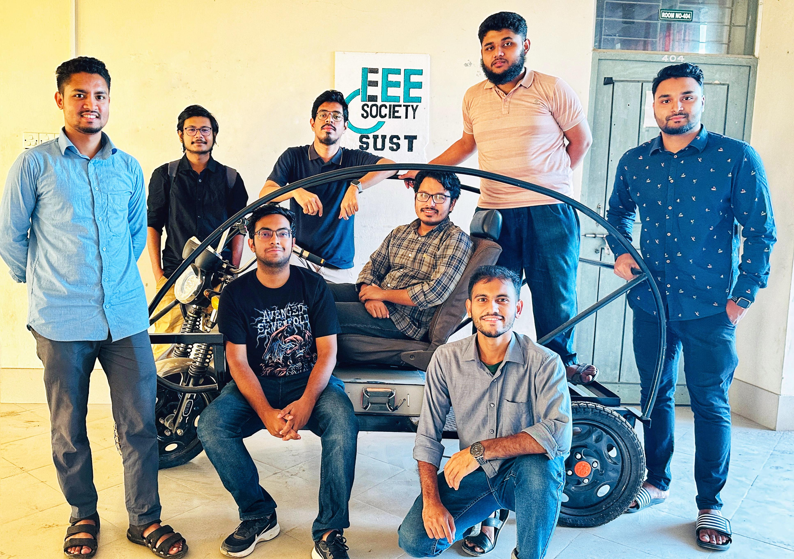
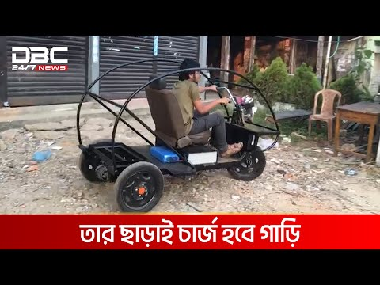

National Newspaper
SUST students develop wireless charging electric vehicle
Thu Nov 30, 2023

Students from the Department of Electrical and Electronics Engineering (EEE) at Shahjalal University of Science and Technology (SUST) have recently developed a prototype of a light-duty electric vehicle that is capable of being charged wirelessly. The experimental prototype of the vehicle was created in the university's power electronics lab by the student-led Power Electronics team.... [Read More]
TV News
